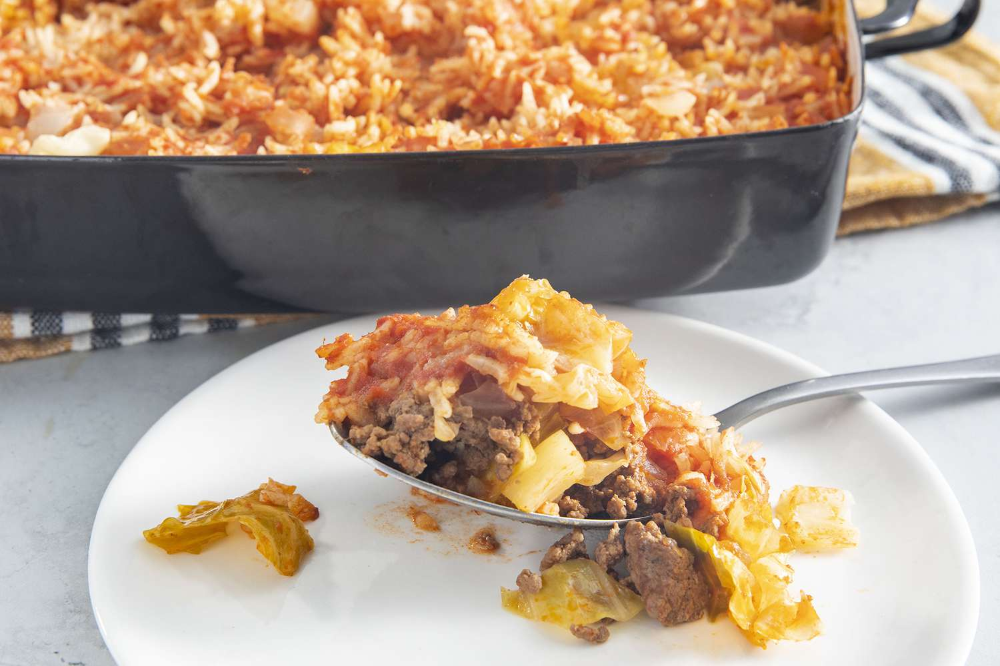

My cabbage roll casserole has all the ingredients of stuffed cabbage rolls but is a lot easier to make! This basic recipe will appeal to everyone but if you prefer more flavor, consider adding crushed garlic, paprika, thyme, or cayenne pepper.